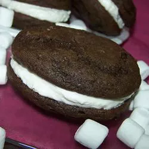

Moon Pies!

Description
Now you can make this Southern favorite at home. Full of chocolate and marshmallow goodness! Vanilla extract may be substituted with coconut or mint extract.
Ingredients
- ½ cup butter, softened
- 1 cup white sugar
- 1 egg
- 1 cup evaporated milk
- 1 teaspoon vanilla extract
- 2 cups all-purpose flour
- ½ teaspoon salt
- ½ cup unsweetened cocoa powder
- 1 ½ teaspoons baking soda
- ½ teaspoon baking powder
- ½ cup butter, softened
- 1 cup confectioners' sugar
- ½ teaspoon vanilla extract
- 1 cup marshmallow creme
- Preheat oven to 400 degrees F (200 degrees C). Lightly grease a cookie sheet.
- To Make Cookie Crusts: In a large mixing bowl, cream together 1/2 cup butter or margarine and white sugar. Add egg, evaporated milk, and vanilla. Mix well. In a separate bowl, mix together flour, salt, cocoa powder, baking soda, and baking powder. Add flour mixture slowly to sugar mixture while stirring. Mix just until all ingredients are combined.
- Drop the dough onto greased cookie sheet by rounded tablespoonfuls. Leave at least 3 inches in between each one; dough will spread as it bakes.
- Bake in preheated oven for 6 to 8 minutes, until firm when pressed with finger. Allow to cool at least one hour before filling.
- To Make Marshmallow Filling: In a medium mixing bowl, blend together 1/2 cup butter or margarine, confectioners' sugar, flavored extract, and marshmallow creme. Mix until smooth. Assemble pies by spreading 1 to 2 tablespoonfuls of filling on flat side of a cookie crust, then covering filling with flat side of another cookie crust.